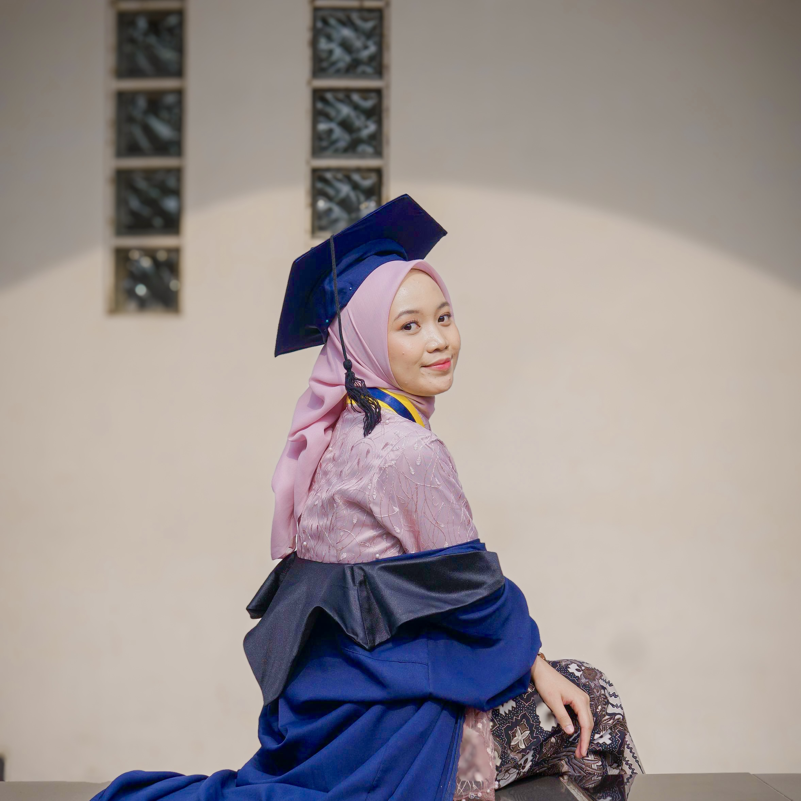

R&D Engineer · Cimahi, Indonesia
Mechatronics & Automation Engineer, graduated Cum Laude from Polman Bandung. Curious about how things work — and how to make them work better.
Explore my work
About
I work in Research & Development at PT. Wiratama Sistem Integrasi, where I apply mechatronics and automation principles to real-world system integration. I enjoy building things from scratch — whether that's motor control firmware, a web app, or a new skill.
Portfolio
Engineering builds, automation experiments, and side projects — documented and shared.
Education
Hobbies & Interests
Featured Project
Built as a personal study tool — spaced repetition (SM-2), speech synthesis pronunciation, chapter-based quizzes, and an AI tutor chat. Open to anyone who wants to learn too.
Open the App →